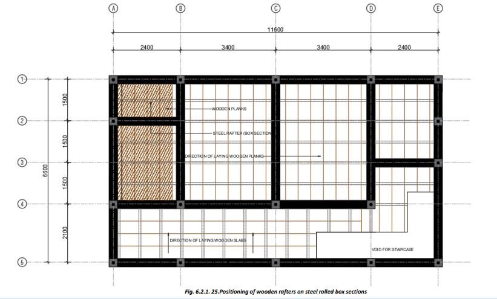

● Provide good strong and level shuttering between the walls, supported rigidly over ballies/steel props.
● Lay bricks on the shuttering, ensure that the longer side of the brick is parallel to the shorter side of the room. Maintain gaps of 50 to 70 mm width (otherwise it will be difficult to fill concrete properly). Place 12mm diameter main bars (Red) first and place 12mm diameter distributor bars (Blue) crossing over the main (red) bars. (Fig. 6.2.1.37). Provide spacers below the bars to ensure that the bars are about 15 to 20mm above the shuttering.
● Fill the gaps between the bricks with 1:1.5:3 cement concrete. Use a vibrator for compaction of concrete and to encase the bars in the gaps with concrete properly.
● After filling all the gaps properly, provide a 6 cm thick layer of cement concrete over the laid bricks covering the entire surface immediately after filling the gaps.
● Level and finish the surface to proper slope towards the rainwater pipe/drain.
● Continue water curing for at least 21 days.
● Depending on local temperature, the shuttering can be knocked down after at least 28 days. If it is very cold we may have to wait a few days more.
• Do not lay roof slab and/or cast any other cement concrete component in frigid temperatures. Cement concrete is badly affected if freshly laid cement concrete freezes due to very low (below 5°C) temperatures.
• Use high-quality mud blocks, which should be well-cured and have the proper mix of soil and stabilizer.
• Mud blocks provide natural thermal insulation. Consider adding an additional layer of insulation if needed.
• Apply a waterproofing layer on top of the roof to prevent water infiltration, which can damage both.
Alternatively: Provide conventional wooden plank roof supported on wooden rafters / hollow steel box sections fixed on RCC Roof Bands/ Beams using steel clamps.
Laying Intermediate Wooden Floor:
Here are the steps for the construction of the wooden roof on intermediate floors:
● After reaching the roof level of the ground floor, we will make the roof of the ground floor which is also the floor of the first floor.
● Conventionally, we use wooden beams placed over the RCC roof band at about 600 to 900 mm apart. Support on the walls should be at least equal to the larger dimension of the cross-section of the rafters.
● Over the beams, wooden planks are fixed to make the ground floor roof.
● The gap between the wooden rafters over the walls is filled with brick masonry or cement concrete. The ends of the rafters are not to be exposed to weather.
● Provide cross bracings between the rafters to check de-shaping of the roof during earthquakes, etc.
● All wooden members must be dry, free from loose knots, rot, or any other defect.
● Treat all wooden members with anti-termite chemicals/creosote oil for safety against termites and other insects.
● In place of timber rafters, we can also use Hollow steel sections of size 120x75x4mm for clear spans of up to 3000mm, at up to 750 mm spacing.
● Over the hollow steel sections, wooden decking can be fixed to make the floor.
• Once the roof slab has been laid, we can make a parapet wall up to 300 mm high using clay bricks or provide a roof projection.
• Provide a coping on the parapet wall to protect it from rains/physical damage.
• Make a mumty and stairs to reach the roof terrace.
• Apply a strong, durable, and water-resistant shield to the house using ‘Ferrocement Plaster’ after completing the mumty.
Step 11: Making of Gable Band:
The following steps are to be followed in case a gable roof is required:
● To make a Gable wall, make one course (6”) of block masonry leaving about 300mm from each end.
● Over this course, make sloping masonry to create the gable wall with a slope of 15 to 30 degrees.
● Over the gable masonry, provide 2 nos of 10mm diameter steel bars and 6mm links to make the RCC gable band.
● Vertical corner bars coming from the walls are bent and tied to the gable band bars as shown.
● Now lay 75mm thick concrete over the gable to make the RCC gable band.
1) Before concreting the Gable Band, provide anchor bars in concrete to anchor purlins to the gable band.
2) After the RCC Gable Bands have cured for at least two weeks, we can start assembling the roof by providing wooden or steel trusses on the walls of the rooms.
3) Once the supporting structure is ready, CGI sheets are fixed using J-bolts. Also, provide rainwater gutters and pipes.
4) To avoid leakages, always punch CGI sheets upwards from below the roof and not downward from above the sheets.
The structure is now ready. Provide internal and external plaster, door/window shutters, floors, electrical, water-supply, and sanitary fittings, etc. Paint the house as per your liking.